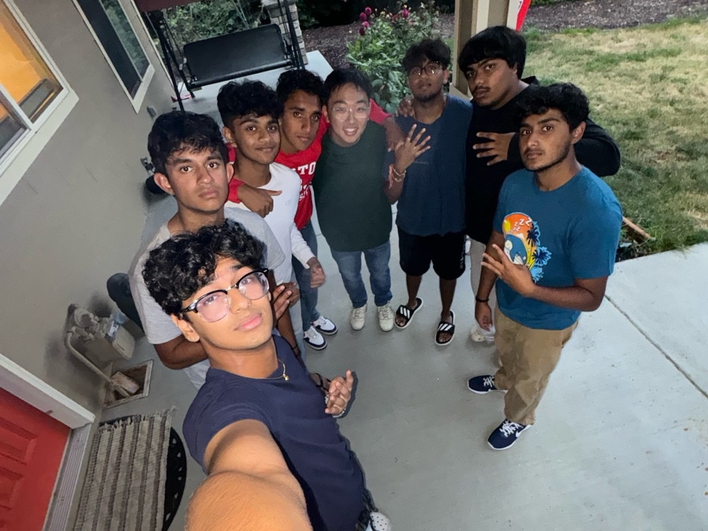

I'm building something new. I'm also studying CS and math at UC San Diego as a transfer student from De Anza College.
Before that, I built Laplace Research, Vela Exchange, Monolith Investments LP, and a bot-driven sneaker resale business that reached over 50 countries.
I'm huge into contributing to open-source AI, check out some of my work at ConvictionBench, HuggingFace, and GitHub.
Outside of work, I love R&B, racket sports, and spending time with friends.
— of 86.53U.S. estimate for Asian Indian men · 86.53 years years
—% lived
